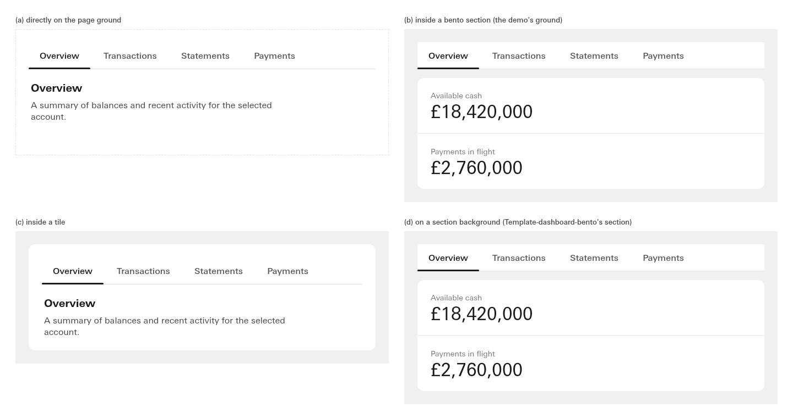
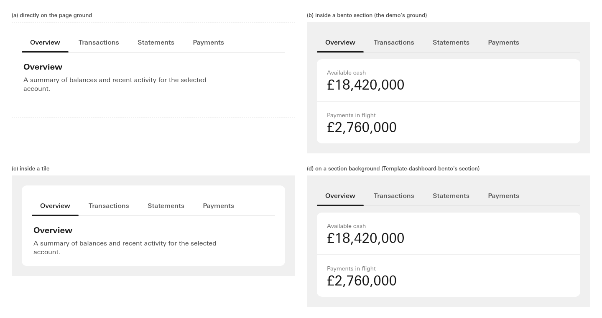
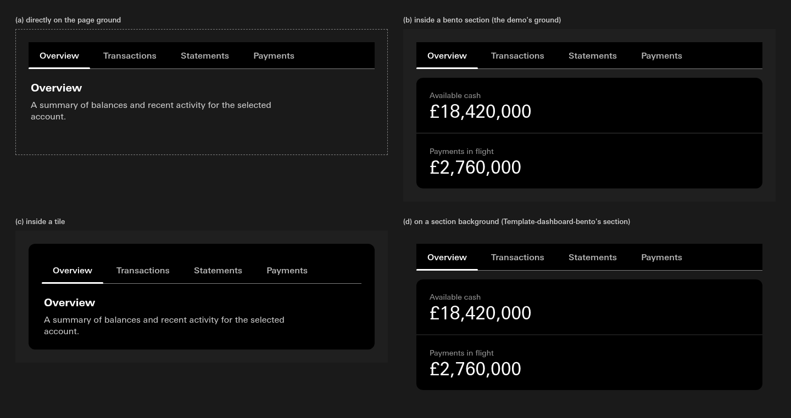
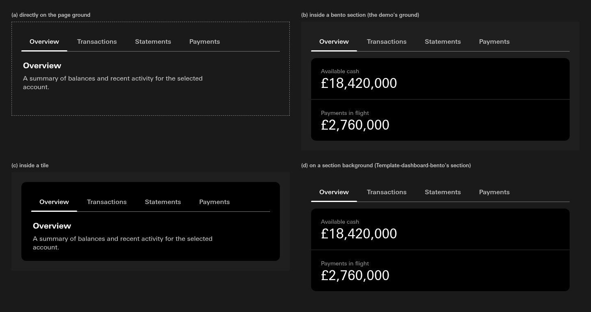
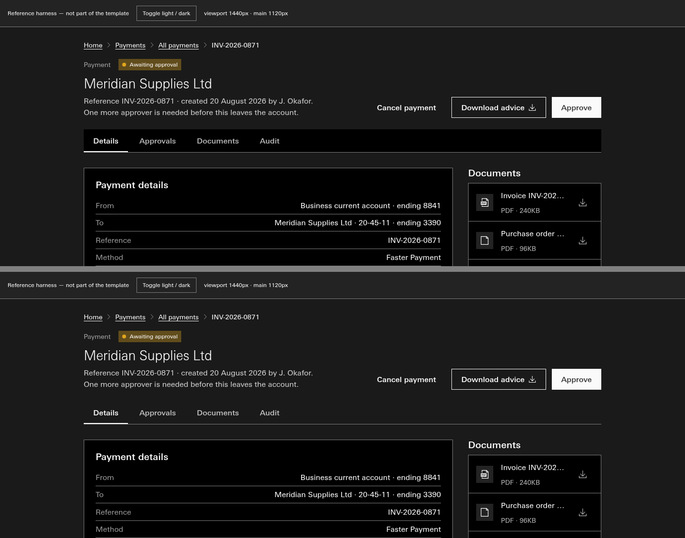
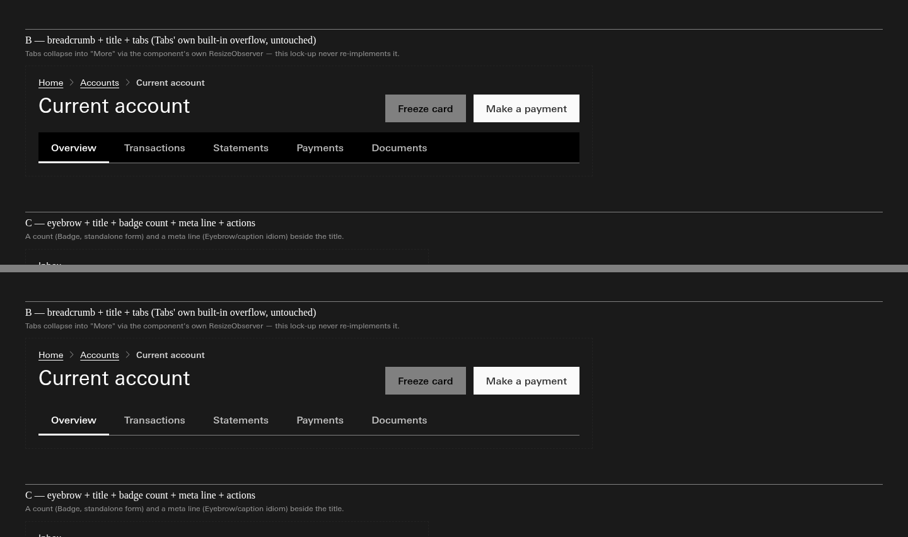

03 · The tab strip in context · call
The strip is painted as a tile, so it bands wherever it sits on anything else, in light too.
"I need to see this, it gets complicated when we have page backgrounds and bento sections"
The strip's colour is the tile colour: white in light, black in dark. Light looked right only because its page is also white. On a grey bento ground or a grey section, light draws a white bar exactly as dark draws a black one. Letting the strip take whatever it sits on removes the band everywhere; the track line and the underline still mark it.
Four grounds, composed the way the banking demo composes: (a) the page, (b) a bento section on the demo's grey ground, (c) inside a tile, (d) a section background, the one Template-dashboard-bento uses. Left is as built, right is the strip taking its container's colour.






The two real templates that carry the strip, as their reference pages stand (Mono dark): top as built, bottom taking its container.


A third reading, a band only when the strip sits on a different surface than its panel, collapses into the second everywhere Apollo composes tabs today: in every template and context found, the panel sits on the same ground as the strip. It would only differ for a tab strip fused to the top of a card, which no snippet draws. So it is not shown.
Should the tab strip take the colour of whatever it sits on, in both modes?
Recommendation: yes, in both modes, because it then never draws a band on any page, bento or section ground, and light and dark read the same. It changes light on grey grounds too (the white bar goes). Nothing is changed until you say.
Technical
- Where the band comes from:
tabs/backgroundaliasessurface/raised(dark #000000 since s310-D3). Three canon scopes paint it:.cn-tabs,.cn-page-header-lockupand.cn-template-detail, each.tablist{background:var(--tabs-background)}. - Measured strip and ground, Console dark as built: (a) #000 on page #1A1A1A, (b) #000 on #1F1F1F, (c) #000 on tile #000, (d) #000 on section #1A1A1A. Console light: (a) #FFF on #FFF, (b) #FFF on #F0F0F0, (c) #FFF on #FFF, (d) #FFF on #F0F0F0. Facts in
notes/_lanes/310/B/img/tabs-facts.json. - Composition:
notes/_lanes/310/B/tabs-context.html, canon.css and type.css as the demo links them, Tabs markup fromknowledge/snippets/Tabs.reference.htmlinside.cn-tabs, tiles as.c-bento__tile.dashboard-tilewith the demo's own tile rules; grounds bound to--background-default,--surface-subtle,--surface-section. A few lines of script place the underline, which Tabs' own script does in the snippet. The two real templates areknowledge/snippets/Template-detail.reference.htmlandPage-header-lockup.reference.html, rendered as they stand in Mono (their native form). Driversrender_tabs.py,render_real.py. The container reading sets--tabs-background: transparenton the page only. - Building it would re-alias
tabs/backgroundtosurface/transparentin both modes, then regen. The Tabs manifest measures its text, underline and focus ring againsttabs/background; with a transparent strip those pairs must be measured against the ground the strip sits on (the state-contrast sweep reads them). Tab labels at 72% on the lightest ground (#F0F0F0) measure 6.44 to 1.tabs/overflow-background(the More menu) stays a surface.